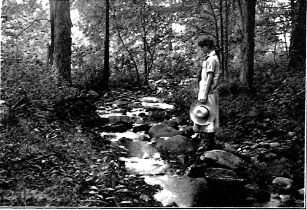
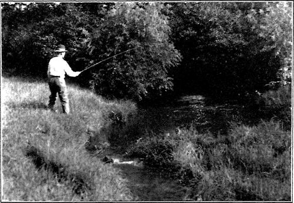

The Landscape Motive
Description
This section is from the book "The Natural Style In Landscape Gardening", by Frank A. Waugh. Also available from Amazon: The Natural Style in Landscape Gardening.
The Landscape Motive
EVERY work of art should have its subject, theme or motive. This principle is sufficiently obvious. In the natural style of landscape gardening, however, it becomes especially important to keep this principle in view, and to have some very definite method for putting it into effect. In certain types of gardening it may possibly answer to give a general, more or less vague, feeling of beauty, or of festivity, or of courtliness, but when one essays the larger flights of composition in informal landscape, it is positively necessary to artistic success that some definite, concrete motive be adopted and developed.
Comparisons with the other arts are illuminating at this point. The idea of the theme or motive * is universally recognized in music If we adopt the stronger form of the idea which the musicians recognize as the leit-motiv, we shall have just what the landscape gardener is seeking for his art. It is the leading motive or theme of the musical composition which stands out as its recognizable quantity, which gives it character. This leading motive is introduced near the beginning of the work, frequently in the very first period, and is carried forward to the finale. In the meantime it is presented in many different ways, sometimes very simply, sometimes much elaborated and overlaid with ornament, sometimes changing keys, but always capable of recognition as the dominating theme. * The comparison with literature is quite as much to the point. No one would attempt to excuse a literary essay which did not promptly announce one distinct theme and then stick strictly to it. In successive paragraphs of the essay or sermon this theme would be developed from different points of view and would be given different methods of literary treatment. First it would be stated in simple terms, then it would be illustrated by an example, then enforced by historical evidence, then given the "human interest" treatment (vox humana stop), then touched off with a funny story, then brought to a resounding climax. But all the way through, and in every paragraph, the theme—the leading motive—would stand out clearly and control the meaning of every word.
* In common studio patter this word is always pronounced and written motif; but since we have a plain English spelling for precisely the same word, I prefer to spell it motive.
This comparison is the more valuable because the informal type of landscape composition bears so many resemblances to prose composition in literature. The formal garden might be likened to poetry. Each line has just so many feet; each part is formally balanced by another exactly corresponding part. In poetry it is much less necessary than in prose to develop a definite and didactic theme. The form may be so beautiful in its obvious perfections that a mere vague feeling of beauty or of mystery or of human passion may suffice. It is not at all necessary to reach any specific conclusions. But the prose writer and the naturalistic landscape gardener can not depend on these things,—the forms with which they deal are not sufficiently obvious to be admired on their own account; more attention must be given to content, and content must be presented in a logical, understandable way.
Now sound prose writing depends absolutely on two principles, videlicit, first, on unity of theme, and, second, on paragraphic structure. It is now our purpose to develop these two principles in their application to the naturalistic form of landscape gardening.
The landscape motive may be defined as the central subject matter of each composition. This definition should specifically include both form and spirit, for the landscape motive should present a tangible physical unit clearly expressive of the dominating spirit of the whole work.
This definition is illustrated in the comparisons already made between the subject, text or topic in literature, the theme or motive in music, and the leading motive in landscape. The idea can be made clearer, however, and further illustrated, by giving a few examples of landscape motives.
The oak-tree motive: On the low rolling hills of the central Mississippi basin, perhaps most typically in Missouri, are miles and miles of scattered oaks. These give the country its character. They are the natural landscape motive. As such they could be readily adopted by the artist designing a naturalistic park reserve in this country. It would then become his opportunity to present the beauty of the oak trees from as many points of view and in as many different ways as possible.
The Florida pine-tree motive: In central Florida the tall, straight, sparsely scattered pine trees dominate the landscape. Here they are always associated with the scrub palmetto, forming an ecological group (see page 51) which, however, may still be called the pine-tree motive.
The birch-tree motive: On the dry hill-side pastures of New England the birches are very much at home. The squaw birch, or gray birch, in particular may be accepted as the most characteristic plant. It is usually associated with other plants (see page 51), and these together form a great variety of effective pictures. The young sprouts, the crowded young trees, the graceful mature groups, or Hie hoary old specimens are all beautiful, so that the development of the birch tree idea has alluring possibilities.
The sunflower motive: My own little garden is dominated by its sunflowers. This is partly a reminiscence of Kansas, and doubtless also partly an expression of my own weedy philosophy. Whatever the primary reason for having those sunflowers there no one could ever think of that garden without its sunflowers. It has other things in it —plenty of them,—but it is essentially a sunflower garden,—it is dominated by the sunflower motive.
The hollyhock motive: In Vermont, on the shores of Lake Champlain, I know a fine substantial dignified old-fashioned stone farmhouse. About it is a comfortable lawn space set off by a low picket fence from the encroachments of the farmyard. Along the foundations of this comfortable old house and also close up against the picket fence runs a border of hollyhocks. There may or may not be other things growing in that garden—I don't remember. To me it is always a garden of hollyhocks.
The river motive: Wherever a river threads its way through a landscape it is pretty sure to carry with it the dominating landscape theme. Countless beautiful views show up and down its stretches. Masses of hills or trees come into view at every bend. Endless pictures are reflected in its quiet reaches, and endless songs go up from its rocky riffles. Any park lying along almost any river would quite certainly be dominated by the river motive.
In the Muddy Brook Parkway, Boston, Mr. Frederick Law Olmsted, Sr., gave us a small but highly refined example of this type of landscape motive.
The prairie motive: Personally, just to satisfy my own artistic aspirations, I would like to make a prairie park. I would like to have a few miles of perfectly flat land in Central or Western Kansas, and I would like to have it lie where the level horizon would form an unbroken circle some fifteen miles in radius. This level line would be my motive, and I would put in only enough upright lines to give the little necessary artistic contrast and to supply a scale of distances. I would have a lawn of buffalo grass furnished with the exceptionally rich and interesting flora of that section,—Anemone Carolina, Astragalus missouriensis, Baptisia australis, Salvia grandiflora, Asclepias varticillata, Tradescantia virginiea, and never forgetting Opun-tia rafinesquii. Here a man might stand quietly in the center of a stable horizontal world with creation all open around and above him, with himself the center of it,—the very type of our whole northern anthropocentric philosophy.
The Connecticut motive: This reference to the prairie motive introduces us to a much more complex notion, the motive made up of several elements, the relationships of which may fluctuate from paragraph to paragraph. I once heard an art critic say of certain paintings that they looked very Connecticut. The landscape gardener who could make a park look very Connecticut would plainly be obliged to use the Connecticut motive. This motive would be a compound of several simple elements, such as: a. Low rounded hills.
b. Scattering forest of mixed chestnut, oak and pine.
c. Undergrowth of laurel.
d. Marginal growth of birch, dogwoods and viburnums.
e. Half-open pastures with red cedars.
ON' MOUNT TOBY, MASSACHUSETTS.
Photographed by the Author.
NATI'EAIJSTIC COMPOSITION. GROUNDS OF THE MASSACHUSETTS AGRICULTURAL COLLEGE.
P'twnt-i, t.r<rn?ed and photographed: by the Author.
This Connecticut landscape then becomes a theme of unlimited possibilities. It may be given more liberal, diversified and intricate treatment than the pine-tree motive, and it will necessarily be much harder to carry such a theme clearly home to the audience. Yet this is just what every thoughtful landscape gardener is trying to do.
The history motive: Any one who visits the national reservation at Lookout Mountain must find the views very impressive. But unless he is wholly innocent of imagination he will be promptly drawn away from the glories of Moccasin Bend by the historic associations. The place is saturated with them. Relics, tablets and monuments are commoner than trees. They are easily accepted as the dominating subject matter—the leading motive.
The Shakespeare motive: In a London park I once visited a little enclosed garden said to contain every kind of flower and shrub mentioned in the works of Shakespeare. It was a curious place—I am sure some persons found it interesting. To me it stands as a first-class illustration of the literary or extrinsic or accidental motive. This is certainly not the highest type of landscape motive, but it is perfectly legitimate, nevertheless.
Possibly it may make this important matter of motives clearer to summarize what has been said by a rough sort of classification. It is clear that the more usual landscape motives fall into the following groups:
1. Topographic motives, such as prairie, mountains, rivers, lakes.
2. Tree motives, belonging primarily to those natural landscapes which are dominated by some single species. This motive species is usually associated with other secondary species, which then become integral to the theme.
3. Garden flower motives, such as sunflower, the hollyhock, and hundreds more, suited for use chiefly in small gardens.
4. Historic, literary and other extraneous motives.
The manner in which these motives are developed in landscape composition will be discussed more fully in the next chapter.
Continue to: